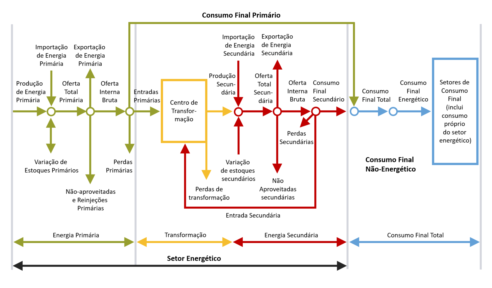

Anexo V: Estrutura Geral do Balanço Energético Nacional

Descrição Geral
O Balanço Energético Nacional – BEN foi elaborado segundo metodologia que propõe uma estrutura energética, suficientemente geral, de forma a permitir a obtenção de adequada configuração das variáveis físicas próprias do setor energético.
A matriz Balanço Energético, síntese da metodologia, expressa o balanço das diversas etapas do processo energético: produção, transformação e consumo, conforme figura e conceituação apresentados a seguir.

Conceituação
Conforme se observa na figura, a estrutura geral do balanço é composta por quatro partes:
Energia Primária
Transformação
Energia Secundária
Consumo Final
Energia Primária
Produtos energéticos providos pela natureza na sua forma direta, como petróleo, gás natural, carvão mineral, resíduos vegetais e animais, energia solar, eólica etc.
Energia Secundária
Produtos energéticos resultantes dos diferentes centros de transformação que têm como destino os diversos setores de consumo e eventualmente outro centro de transformação.
Total Geral
Consolida todas as energias produzidas, transformadas e consumidas no país.
Oferta
Quantidade de energia que se coloca à disposição para ser transformada e/ou para consumo final.
Transformação
O Setor Transformação agrupa todos os centros de transformação onde a energia que entra (primária e/ou secundária) se transforma em uma ou mais formas de energia secundária com suas correspondentes perdas na transformação.
Observações importantes sobre os sinais nos centros de Transformação:
toda energia primária e/ou secundária que entra (como insumo) no centro de transformação tem sinal negativo.
toda energia secundária produzida nos centros de transformação tem sinal positivo.
Perdas
Consumo Final
Nesta parte se detalham os diferentes setores da atividade socioeconômica do país, para onde convergem as energias primária e secundária, configurando o Consumo Final de Energia.
Ajustes Estatísticos
Ferramenta utilizada para compatibilizar os dados correspondentes à oferta e consumo de energia provenientes de fontes estatísticas diferentes.
Os ajustes para cada coluna (1 a 25) são calculados da seguinte forma:
*AJUSTES = OFERTA INTERNA BRUTA (-) TOTAL TRANSFORMAÇÃO (-) PERDAS NA DISTRIBUIÇÃO E ARMAZENAGEM (-) CONSUMO FINAL.
O ajuste é negativo se a oferta interna bruta for maior que as outras parcelas e vice-versa.
Produção de Energia Secundária
Corresponde à soma dos valores positivos que aparecem nas linhas 9.1 a 9.10.
Convenção de Sinais
Nos blocos de oferta e centros de transformação, da matriz do Quadro C1 (produção, importação, retirada de estoque, saídas dos centros de transformação), toda quantidade de energia que tende a aumentar a energia disponível no país é POSITIVA, enquanto que toda quantidade que tende a diminuir a energia disponível no país é NEGATIVA (acréscimo de estoque, exportação, não-aproveitada, reinjeção, energia transformada, perdas na transformação e perdas na distribuição e armazenagem).
Finalmente, todos os dados que se encontram na parte referente ao consumo por motivo de simplificação, na apresentação, aparecem como quantidades aritméticas (sem sinal).
Operações Básicas da Matriz Balanço Energético
Energia Primária e Secundária
O fluxo energético de cada fonte primária e secundária é representado pelas seguintes equações:
*OFERTA TOTAL = PRODUÇÃO (+) IMPORTAÇÃO (+) OU (-) VARIAÇÃO DE ESTOQUES
*OFERTA INTERNA BRUTA = OFERTA TOTAL (-) EXPORTAÇÃO (-) NÃO-APROVEITADA (-) REINJEÇÃO
E ainda:
*OFERTA INTERNA BRUTA = TOTAL TRANSFORMAÇÃO (+) CONSUMO FINAL (+) PERDAS NA DISTRIBUIÇÃO E ARMAZENAGEM (+) OU (-) AJUSTE.
Deve ser observado que a produção de energia secundária aparece no bloco relativo aos centros de transformação, tendo em vista ser toda ela proveniente da transformação de outras formas de energia. Assim, para evitar-se dupla contagem, a linha de “produção” da matriz fica sem informação para as fontes secundárias. Mesmo assim, para a energia secundária também valem as operações anteriormente descritas, desde que se considere a produção nos centros de transformação como parte da oferta.
Transformação
Nesta parte, configurada pelos centros de transformação, é observada a seguinte operação:
*PRODUÇÃO DE ENERGIA SECUNDÁRIA = TRANSFORMAÇÃO PRIMÁRIA (+) TRANSFORMAÇÃO SECUNDÁRIA (-) PERDAS NA TRANSFORMAÇÃO
Consumo Final de Energia
*CONSUMO FINAL = CONSUMO FINAL PRIMÁRIO (+) CONSUMO FINAL SECUNDÁRIO
E ainda:
*CONSUMO FINAL = CONSUMO FINAL Não Energético (+) CONSUMO FINAL ENERGÉTICO